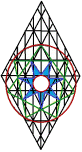
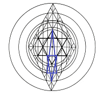
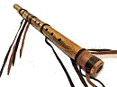
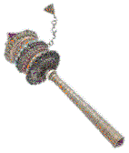

Tipareth:
The Church at Thyatira
Take my yoke upon thee, and learn of me.
And unto the angel of
the church in Thyatira write; These things saith the Son of Elohim,
who hath his eyes like unto a flame of fire, and his feet are like
fine brass; I know thy works, and charity, and service, and faith,
and thy patience, and thy works; and the last to be more than the
first.
Notwithstanding, I have a few things against thee,
because thou sufferest that woman Jezebel, which calleth herself a
prophetess, to teach and to seduce my servants to commit
fornication, and to eat things sacrificed unto idols. And I gave her
space to repent of her fornication; and she repented not. Behold, I
will cast her into a bed, and them that commit adultery with her
into great tribulation, except they repent of their deeds. And I
will kill her children with death; and all the churches shall know
that I am he which searcheth the reins and hearts; and I will give
unto every one of you according to your works.
But unto you I
say, and unto the rest in Thyatira, as many as have not this
doctrine, and which have not known the depths of Satan as they
speak; I will put upon you none other burden. But that which ye have
already hold fast till I come.
And he that
overcometh, and keepeth my works unto the end, to him will I give power over the
nations: And he shall rule them with a rod of iron; as vessels of a
potter shall they be broken to shivers: even as I received of my
Father. And I will give him the morning star. He that hath an ear,
let him hear what the Spirit saith unto the churches.
{kind=link}
The mansion of the morning star flies in tandem with the sun in his circuits; for its silver windows are as the first clear reflection of that great light's brilliance. Its towers are with him in the East when the sun arises in his strength; they are with him, also, in the West, as he turns to visit other lands. Always near him: if we see them not in his appearances, their absence brings no shame; for they often take rest in his aura.
The glory of the sun outshines the mansion of the morning, and he sometimes draws it too close against his countenance for its lesser glory to be visible. Yet, it is very bright, indeed: were it to pass before his face, it would not greatly diminish the sun's shining. She who dwells therein may linger in the night to carry some message to the moon; but she is soon gone to rejoin her beloved, answering his call, to follow him beyond our certain knowing.
The lady of the morning star is
known by some on Earth as Aphrodite, the embodiment of love. We do
not contest their view of her; for it arose in recognition of the
light within her soul; and it was inevitable that those who could
not fully probe her mysteries should name her according to their
perceptions. She is Venus: called Beauty, by men of the West, and
Tipareth, by men of the East. She it is who has the care of all
growing things. Her first name was
ChauWah.
Seven points she has upon her crown, whose lights are mirrored seven times
in the chain she wears about her neck to soothe her fading
memories of the dark mountains she scaled on Earth in the early
days, before she was lifted from the seas. It is said by some that
she was born from the sea, arising full-grown from its ancient
depths upon a shell. This is true enough, but it is not strictly so.
She was first born past memory of mortal men in the garden of
bliss; her birth from the waters was as a second birth: the
beginning of her renewal in the mind of God. It is told she will be
carried in that shell-- as in an ark: again, as in a chariot of
fire-- through and beyond the center of all things, to be seated, at
the end of days, in her destined place, beyond the partings of all
the veils.
At the inward points of her crown are seven narrow
windows that shine as silver paths upon her necklace below. We call
the light that rims these windows silver, but it is the color of
transcendence, a merging of the visible and the invisible spectra.
The windows begin as narrow paths of light; for she first walked
visible realms by narrow roads, which fanned and broadened inwardly
in her travels, to converge upon a path that lifted her safely to
the orb of another, denser firmament than we have known-- a sky
capable of bearing the negligible weight of such a one as she.
Neither is the mansion that lies beneath those skies truly known
to men: the firmament of her world was fashioned as her covering.
Neither could men live there, should they succeed in their vain
efforts to gain her world without her leave and the consent of her
beloved; for the jealous sun would blaze in tireless wrath against
their mortal frames, overwhelming their every precaution, should
they accost the dwelling of his love.
Selah.
Flying Arrow lay aside his flute and rested quietly upon the
earth. He had been watching his brother, the hawk, climb higher and
higher on the hunt, wishing he, too, might fly. He wondered at his
desire; for, truly, he was content as the Great Father had made him.
The manitous were closer kin and flew higher than the hawk; but
he, as yet, had no desire to be as they-- formless, so it seemed,
except in their appearances to men, when they assumed the forms most
convenient to their messages. He understood, at last, that it was
not the giddy freedom of his brother hawk he coveted: he wanted
simply to experience the currents of the sun's breath as clearly as
he felt the insistent warmth of its face upon his own in the heat of
the day.
Instantly upon his understanding, the hawk began to
dive. The harder it fell, however, the higher Flying Arrow's spirit
arose within himself. It seemed his every memory was being lifted
up-- was changing, in his ascent, to truer images of themselves than
they had ever been on Earth. Small, forgotten details of
unremembered days began to burst with meanings unimagined; and,
soon, he was asleep.
In the first beginning of his slumbers,
he saw his brother, Flying Arrow, laying quietly upon the ground and
looking up at him. As he looked more closely, he could see the seven
strands of silver as they began to travel outward from the golden
bowl surrounding the boy's head. The features of his face were as
seven expressions, opening first into the silver cord; and, soon,
all of Flying Arrow appeared therein, to begin the frequent climb
beyond the sky.
How glorious the Great Father had made this
son of all the worlds! Water, earth, air, and fire, and even things
beyond hawk's knowing were as One to such as he. And yet, it was as
though the man, himself, did not know these things.
Many
times the Great Father had commanded the hawk to perch upon the arm
of a manitou to signal its approach unto a son of man who might not,
otherwise, notice. Not even this care was always sufficient to gain
the attention of unthinking men, however; for the manitou sometimes
sounded his trumpet through the hawk's cries to alert them of his
coming. This nearly always won the attention of men, but the hawk
was not certain that it also won their understanding of the
significance of his service.
The hawk began to dive against
the serpent crawling towards the feet of Flying Arrow, and the
manitou freed his servant to other service. Then, reaching out his
right hand from behind the outer veils, the manitou gently cradled
the sleeping man within his palm and began the long and intricate
journey to the Father of Lights. The man had been summoned before
the Throne beyond the heavens. He would speak, in later years, of
Unity. What more might be expected?
Selah.
She remembered trying to explain to her first teacher that there
was no difference whatsoever between and . The teacher had mocked
the child before the whole class, saying, "And I suppose you would
think that there's no difference between an arrow and a bird, simply
because they both can fly and both have feathers!" If the teacher
had not taunted her with that particular rebuke, she might have
hated him forever; but in the child's later studies, she ran across
an Eastern parable that goes, "Words are birds; and birds are
arrows, to the wise."
As she thought on the teacher's words,
she realized that it was her own immaturity that had opened the door
for the teacher's treatment of her. She ought not to have said,
"whatsoever." She had followed the words, like arrows, to the source
of the disagreement. There were, indeed, differences between and ,
as she could now clearly see; but the difference between the two
letters rested in the realms of perspective.
This last
teacher had given the class a word they had never before
encountered. Not a particularly difficult problem, it would seem.
The class had been assigned to translate the new word from the
Hebrew without the help of a Hebrew dictionary. It didn't seed so
difficult, and it would be so easy to cheat! But "words are birds,"
she remembered; so she decided to toss the new word into the sky
within her mind to see what it would do and where it would land.
"Tipareth"
taw, the first letter: numerical
value, 400; traditional significations: the four elements, the four
directions, composites of four; completion, totality; regeneration;
phonetic equivalent: t, th.
pe, the second
letter: numerical value, 80; traditional significations: mouth,
container, pit, soul, face, personality; phonetic equivalent:
p,
f.
alef, the third letter: numerical values, 1;
1,000; traditional significations: ox, horns, seed, power,
beginning, principle; phonetic equivalent:
a.
resh, the fourth letter: numerical value, 200; traditional
significations: head, first appearance, knowledge, intelligence,
beauty, fortune, ruler; phonetic equivalent:
r.
taw, the fifth letter:
numerical value 22; other possible significations:
continuation, sum, perfection, unity.
As she considered the problem before her, she
thought that she just might succeed, if she only knew a little more!
The values of the letters would begin to merge into a unified
concept in her mind, but some element was missing or-- as with her
earlier dilemma while facing comparison of and -- not fully
developed or expressed, thus preventing completion of her
assignment.
Throwing the letters once more into her mind, she
realized that their individual sounds were not united, as in a word;
and she reasoned, therefore, that the element of sound was the
source of her difficulty. She decided that she would have to do some
research on the functions and significances of sound in language,
and that it would be well to begin by better understanding the words
"phoneme" and "phonetic."
Opening her English
dictionary to the appropriate place, her eyes fell on an
alphabetical table entitled, "Phoenician Alphabet." There, before
her, were the same number of letters as in the Hebrew, bearing the
same names and having the same numerical significations and phonetic
renderings. The Hebrew taw corresponded to the Phoenician ,
also named taw, and also pronounced as
t, or
th.
"It's really beautiful," she thought, "how these
things work out! If I learn the differences between
x and
t well enough, I may end by learning that I knew it all
before I first began!"
She mused upon the mysteries of
knowledge and of their foundations in the world of experience, and a
fragment of verse composed by one of her school fellows came into
her thoughts without fanfare and without explanation: "I will wear a
purple shirt before I'm old: my spinning hands will whirl the web's
wheel around its axis, until the hub splits loose
and spills each
single part unto its single destination. And then I'll sigh, I
think, and watch my body wrinkle in smiles."
Selah.
An ancient soul, the old man watched his prayer wheel complete a final turn
and circle to a stop. It was time, again, to say, "Amen." However
much he troubled the waters above with his mantras on behalf of the
thousands who lived within his chakras, the open center never
moved-- however long its agitations might continue! As had been his
custom for many years, he would close his prayers in the four lower
realms, leaving their closing in the four higher realms to the mind
belonging to his body of light.
"Om mani pedme hum." As
above, so below. The fires of inner Earth are quiet, and her pores
are open to the waters. "Om manye paedmehumn." As above, so below.
The waters have found the lowest place and are filling every bowl. "Om."
As above, so below. The waters are tranquil: they are open to the
air. "Om." The air is still: it is drinking. "Aom." The fire is
burning in the thin vapors of the upper air. "Aum."
He gently
laid the prayer wheel beneath his crossed legs and slowly crossed
his arms. Tomorrow, the lilies would open to the sky; the budded
rose would learn her destiny and service. Another interval of rest,
and then the dawn. I charge you, O daughters of the Chakras, that
you stir not up, nor awake my love, until he please.
| Sardis | ||||
| Thyatira |
 |
Philadelphia | ||
| Pergamos | Laodicea | |||
| Smyrna | Ephesus | |||
| site |
book |
|||